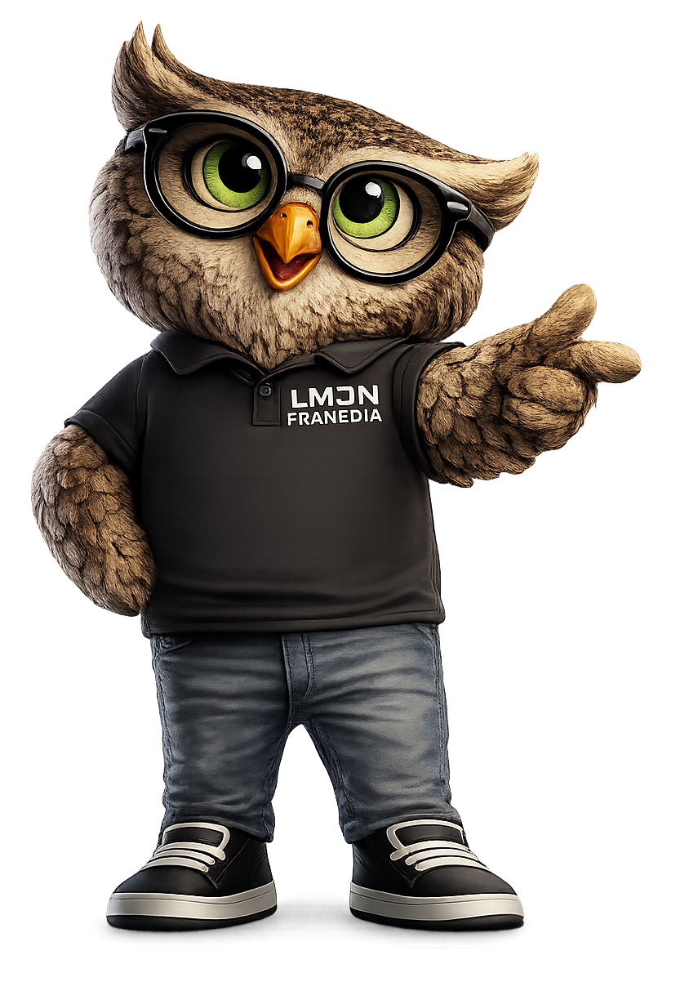

Simulator Area
Selected Colour
#1ECBE1
Preview
Move the handle on the wheel to change the base colour. Choose harmony from the dropdown to see related colours.

🦉 OTTO TIP
A good colour combination is only the first step.
Always verify your colours using the correct ICC profile, viewing conditions, and output process before approving artwork for production.
💡 DID YOU KNOW?
- Complementary — Creates maximum contrast.
- Analogous — Creates natural harmony.
- Triadic — Offers balanced vibrancy.
- Tetradic — Rich and complex, but harder to balance.
- Monochromatic — Simple, elegant and always works.